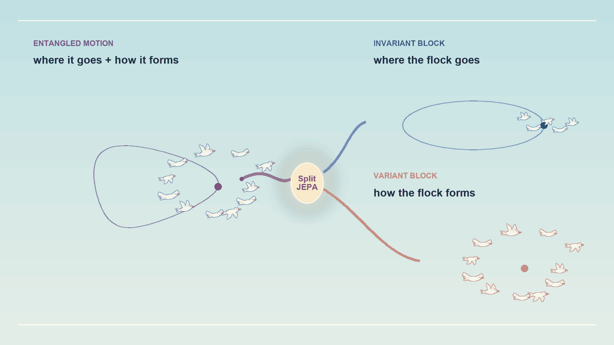
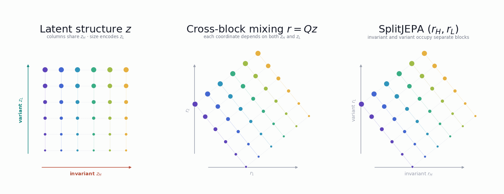
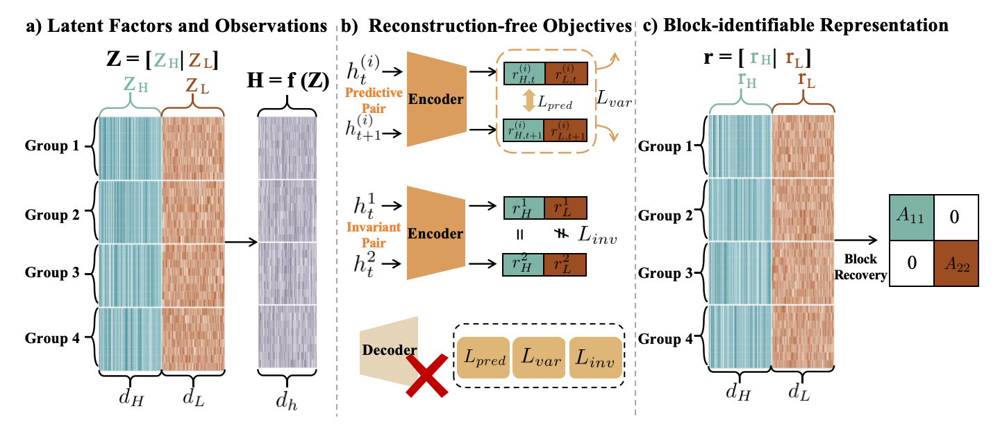
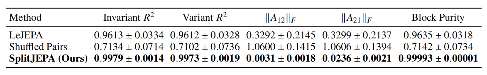
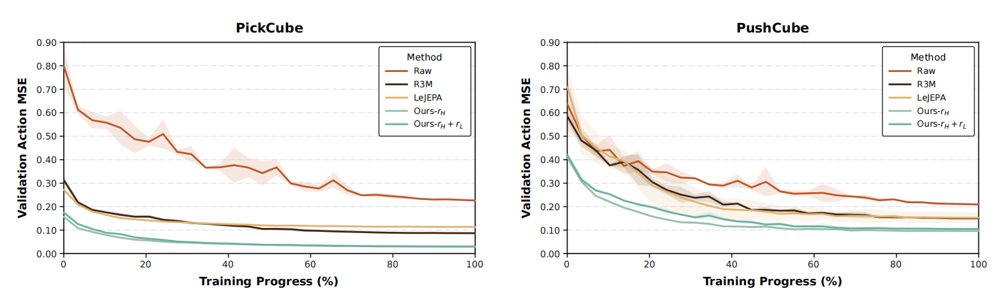
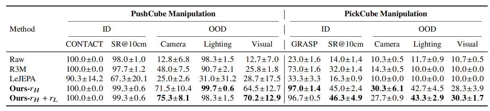

1University of Illinois Urbana-Champaign 2Carnegie Mellon University 3University of Chicago
↗Paper soon⌘Code soon

SplitJEPA predicts in joint embedding space, separating invariant and variant structure without reconstructing observations.
TL;DR
Can we provably learn invariant and variant latent representations without reconstructing observations, as in JEPA?
Abstract
Understanding a dynamical world calls for more than a latent state that summarizes its observations: the state should also be organized into the factors that stay shared across related observations and the factors that vary between them. For example, a robot pushing a cube to a goal should take the same action when the camera shifts or the lights dim, since nothing in the scene has moved. Existing approaches to this decomposition commonly obtain it through reconstruction, so the latent variables must first explain the entire observational world before their organization can be trusted. Joint embedding predictive architectures (JEPAs) model the latent state directly and never reconstruct, yet no existing result recovers the invariant and variant parts of the state they learn. How to learn the invariant-variant structure of the latent world without paying for its reconstruction therefore remains open. To close this gap, we introduce SplitJEPA, a JEPA that jointly recovers the latent state and its invariant and variant organization directly in representation space, without any reconstruction. We prove that, under stationary Gaussian predictive dynamics and a full-rank variation condition, SplitJEPA identifies the invariant and variant subspaces up to independent block-wise isometries, without introducing an observation decoder. Since the guarantee needs no decoder, the result extends reconstruction-free latent recovery to invariant-variant block identification. Experiments on synthetic nonlinear systems and robotic manipulation tasks support the theoretical results and show their practical value for both robustness and efficiency.
Motivation
A useful world representation should do two things: recover the latent state and reveal its internal organization. Some factors capture what remains shared across related observations; others describe how each observation differs. This invariant-variant decomposition lets downstream models use stable information without discarding variation when it is useful.
Existing approaches commonly obtain this structure through reconstruction. A decoder must reproduce the observation, including details that may be irrelevant downstream, while reconstruction alone still does not determine how latent information should be partitioned. JEPAs avoid this detour by predicting directly in representation space, but recovering the complete latent process can still leave invariant and variant directions mixed. SplitJEPA resolves this remaining ambiguity without adding an observation decoder.
How SplitJEPA Works
Prediction retains the latent world; latent structure determines how that world is organized.

The complete latent state is preserved throughout. SplitJEPA removes cross block mixing so that shared and varying information occupy separate representation blocks.
Main Theoretical Results
Three results move from the ambiguity of observation-level recovery to an operationally useful invariant representation.

Predictive alignment recovers the latent state, latent structure identifies its partition, and representation regularization preserves noncollapsed geometry, all without an observation decoder.
Theorem 1 (Nonlinear Latent Ambiguity)
Observation recovery does not determine the block structure because invertible reparameterizations can mix variant information into the invariant block.
Matched trajectories and multiview observations specify what should remain invariant. SplitJEPA combines these correspondences with action conditioned latent prediction to recover a stable control interface without reconstructing pixels.
Experiments
We evaluate block recovery in simulation, offline action prediction, and closed loop robotic manipulation.
Ablation of the predictive, invariance, and variance preserving components. Bars show mean ± standard deviation over five seeds. Removing predictive alignment reduces global linear recovery; removing invariant pair recovery degrades block recovery and increases cross block leakage; removing variance regularization and ZCA normalization increases covariance error.

Block recovery on the synthetic OU system. All methods reuse the same frozen encoder and differ only in the information available to the spectral recovery stage. Results report mean ± standard deviation over five seeds.
Robots: Offline Action Prediction
Behavior cloning policies are evaluated by validation action MSE throughout training.

Offline action prediction performance. Validation action MSE during behavior cloning on PickCube and PushCube, comparing raw observations, R3M, LeJEPA, and the two SplitJEPA representation interfaces.
Robots: Closed Loop Manipulation
Policies are evaluated in distribution and under camera, lighting, and combined visual shifts.

Robotic manipulation performance. Results on PickCube and PushCube under in distribution and out of distribution conditions. CONTACT and GRASP are reported for the standard setting; the OOD columns report SR@10cm under camera, lighting, and combined visual shifts.
BibTeX
@article{hua2026splitjepa,
title = {SplitJEPA: Learning Invariant and Variant Latent Worlds without Reconstruction},
author = {Hua, Ruijin and Liu, Zichuan and Zhao, Zhuokai and Zheng, Yujia},
year = {2026},
note = {Preprint}
}